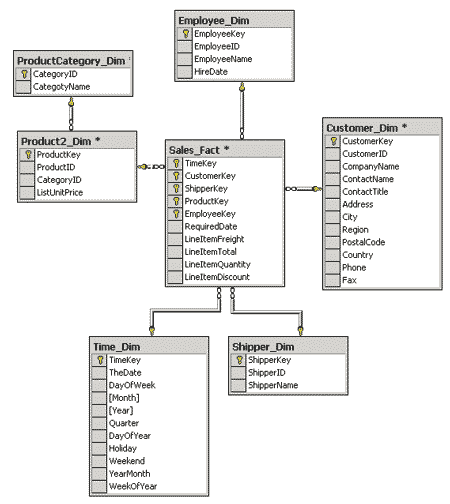
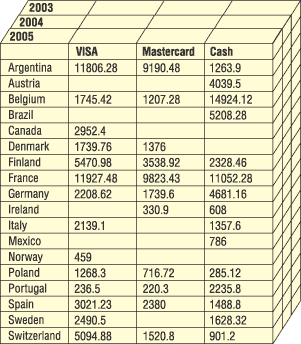
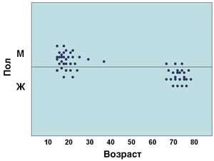
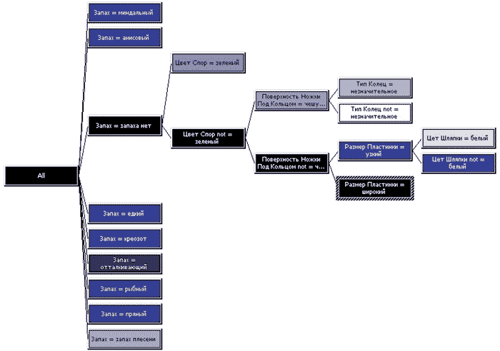

Анна Иванова
Сегодня практически любая компания, будь то крупная или совсем небольшая, частная или государственная, использует в своей деятельности информационные системы и, как правило, - уже не первый год. Это означает, что большинство предприятий уже владеет определенным объемом накопленных данных, и этот объем нередко представляет собой немалую ценность - ее, как минимум, подтверждает тот факт, что в последние годы довольно много внимания в прессе уделяется утечкам корпоративных данных, рассматривающихся в качестве выгодного товара для криминального рынка.
Отметим, что ценность корпоративных данных заключается не только в совокупной стоимости отдельных записей, но и в зачастую намного превышающей ее стоимости набора данных как источника дополнительной информации, которую невозможно получить на основании одной или нескольких записей, - такой, как сведения о закономерностях, тенденциях или взаимозависимостях между какими-либо данными, позволяющие принимать определенные бизнес-решения. Именно поэтому в состав современных средств управления предприятиями и цепочками поставок, банковских информационных систем, других бизнес-приложений обычно включаются не только средства ввода и редактирования данных, но и средства их аналитической обработки, позволяющие тем или иным способом выявлять и представлять закономерности и тенденции в данных. Средства эти сегодня весьма разнообразны. Они включают инструменты для построения реляционных хранилищ данных - специальным образом спроектированных баз данных, позволяющих с высокой скоростью выполнять запросы на выбор данных; серверные и клиентские средства построения многомерных хранилищ данных, содержащих в нереляционной структуре агрегатные данные (суммы, средние значения); клиентские приложения для предоставления пользовательских интерфейсов к реляционным и многомерным хранилищам данных; средства создания решений на основе подобных хранилищ, анализа многомерных и реляционных данных, генерации отчетов по многомерным и реляционным данным. Ниже мы обсудим, что представляют собой продукты каждой из указанных категорий.
Хранилища данных
Хранилищем данных (Data Warehouse) обычно называют базу данных, основное назначение которой - выполнение аналитических запросов на выбор данных. Хранилища данных могут быть и реляционными, и многомерными.
Ральф Кимбалл (Ralph Kimball), один из авторов концепции хранилищ данных, описывал хранилище данных как "место, где люди могут получить доступ к своим данным" (см., например, Ralph Kimball, The Data Warehouse Toolkit: Practical Techniques for Building Dimensional Data Warehouses, John Wiley & Sons, 1996 и The Data Webhouse Toolkit: Building the Web-Enabled Data Warehouse, John Wiley & Sons, 2000). Он же сформулировал и основные требования к хранилищам данных:
- поддержка высокой скорости получения данных из хранилища;
- поддержка внутренней непротиворечивости данных;
- возможность получения и сравнения так называемых срезов данных (slice and dice);
- наличие удобных утилит просмотра данных в хранилище;
- полнота и достоверность хранимых данных;
- поддержка качественного процесса пополнения данных.
Выполнить все перечисленные требования в рамках одного и того же продукта зачастую не удается. Поэтому для реализации хранилищ данных обычно используется несколько продуктов, одни их которых представляют собой собственно средства хранения данных, другие - средства их извлечения и просмотра, третьи - средства их пополнения и т. д.
Отметим, что при проектировании хранилищ всегда делаются априорные предположения о характере взаимозависимостей размещаемых в них данных, и польза от применения хранилища данных при принятии управленческих решений во многом зависит от правильности этих предположений.
Реляционные хранилища данных
В отличие от так называемых оперативных баз данных, с которыми работают приложения, изменяющие данные, реляционные хранилища данных проектируются таким образом, чтобы добиться минимального времени выполнения запросов на чтение (у оперативных же баз данных чаще всего минимизируется время выполнения запросов на изменение данных). Обычно данные копируются в хранилище из оперативных баз данных согласно определенному расписанию.
Типичная структура хранилища данных существенно отличается от структуры обычной реляционной СУБД. Как правило, эта структура денормализована (это повышает скорость выполнения запросов) и может допускать избыточность данных. Типичная структура хранилища данных приведена на рис. 1. Основные составляющие этой структуры - таблица фактов (fact table) и таблицы измерений (dimension tables).
|  |
| Рис. 1. Пример структуры хранилища данных.
|
Таблица фактов (в примере на рис. 1 она называется Sales_Fact) - это основная таблица хранилища данных. Как правило, в нее входят сведения об объектах или событиях, совокупность которых будет в дальнейшем анализироваться. Обычно такая таблица содержит уникальный составной ключ, объединяющий первичные ключи таблиц измерений. Чаще всего это целочисленные значения либо значения типа "дата/время" - ведь таблица фактов может содержать сотни тысяч или даже миллионы записей, и хранить в ней повторяющиеся текстовые описания, как правило, невыгодно. Помимо этого таблица фактов содержит одно или несколько числовых полей, на основании которых в процессе выполнения аналитических запросов получаются агрегатные данные.
Отметим, что в таблице фактов нет никаких сведений о том, как группировать записи при вычислении агрегатных данных. Эти сведения содержатся в таблицах измерений.
Таблицы измерений содержат неизменяемые либо редко изменяемые данные. В них имеется как минимум одно описательное поле и, как правило, целочисленное ключевое поле (обычно это суррогатный ключ). Нередко (но не всегда) таблица измерений может содержать и поля, указывающие на дополнительные атрибуты, имевшиеся в исходной оперативной базе данных, или на атрибуты, ответственные за группировку ее собственных данных. Каждая таблица измерений должна находиться в отношении "один ко многим" с таблицей фактов.
Отметим, что скорость роста таблиц измерений должна быть незначительной по сравнению со скоростью роста таблицы фактов; например, новая запись в таблицу измерений, характеризующую товары, добавляется только при появлении нового, не продававшегося ранее товара.
В состав современных средств проектирования данных, таких, как CA AllFusion Modelling Suite, обычно входят шаблоны для проектирования хранилищ данных. Следует сказать, что для создания реляционных хранилищ данных иногда применяются специализированные СУБД, хранение данных в которых оптимизировано с точки зрения скорости выполнения запросов. Пример такого продукта - Sybase Adaptive Server IQ, реализующий нетрадиционный способ хранения данных в таблицах. Однако создавать хранилища можно и в обычных реляционных СУБД.
OLAP и многомерные хранилища данных
Многомерные хранилища данных составляют основу OLAP-средств (On-Line Analytical Processing), предназначенных для комплексного многомерного анализа данных. Концепция OLAP была описана в 1993 г. Э. Ф. Коддом, автором реляционной модели данных, и в настоящее время поддержка OLAP реализована во многих СУБД и средствах анализа данных.
Многомерные хранилища обычно содержат агрегатные данные (например, суммы, средние значения, количество значений) для различных выборок. Чаще всего такие агрегатные функции образуют многомерный набор данных, называемый кубом, оси которого (называемые измерениями) содержат параметры, а ячейки - зависящие от них агрегатные данные (иногда их называют мерами). Вдоль каждой оси данные могут быть организованы в иерархии, отражающие различные уровни их детализации. Как правило, агрегатные данные получаются путем выполнения серии запросов на группировку данных типа:
SELECT Country, ShipperName, SalesPerson SUM (ExtendedPrice) FROM Invoices GROUP BY COUNTRY, ShipperName, Year |
Число осей куба обычно совпадает с количеством полей для группировки (рис. 2).
|  |
| Рис. 2. Многомерный куб.
|
Отметим, что довольно часто в качестве источника данных для подобных запросов выступают реляционные хранилища данных. В этом случае таблицы измерений, как правило, содержат исходные данные для формирования измерений куба, а таблица фактов - исходные данные для вычисления мер куба.
В многомерных хранилищах данных содержатся агрегатные данные различной степени подробности, например, объемы продаж по дням, месяцам, годам, по категориям товаров и т. п. Цель хранения агрегатных данных - сократить время выполнения запросов, поскольку в большинстве случаев для анализа и прогнозов интересны не детальные, а суммарные данные. Однако сохранение всех агрегатных данных не всегда оправданно - ведь при добавлении новых измерений объем данных, составляющих куб, растет экспоненциально (иногда говорят о "взрывном росте" объема данных). Для решения проблемы "взрывного роста" применяются разнообразные схемы, позволяющие при вычислении далеко не всех возможных агрегатных данных достичь приемлемой скорости выполнения запросов.
Как исходные, так и агрегатные данные могут храниться либо в реляционных, либо в многомерных структурах. Поэтому в настоящее время применяются три способа хранения данных:
- MOLAP (Multidimensional OLAP) - исходные и агрегатные данные хранятся в многомерной базе данных;
- ROLAP (Relational OLAP) - исходные данные остаются в той же реляционной базе данных, где они изначально находились, агрегатные же данные помещают в специально созданные для их хранения служебные таблицы в той же базе данных;
- HOLAP (Hybrid OLAP) - исходные данные остаются в той же реляционной базе данных, где они изначально находились, а агрегатные хранятся в многомерной базе данных.
Некоторые OLAP-средства поддерживают хранение данных только в реляционных структурах, некоторые - только в многомерных. Однако большинство современных серверных OLAP-средств поддерживают все три способа хранения данных. Выбор способа хранения зависит от объема и структуры исходных данных, требований к скорости выполнения запросов и частоты обновления OLAP-кубов.
Выпущенные в течение последних лет СУБД ведущих производителей - IBM, Microsoft, Oracle, содержат средства для создания многомерных хранилищ данных (эта традиция была начата несколько лет назад корпорацией Microsoft, включившей OLAP-сервер в состав SQL Server 7.0). Существуют и отдельные продукты для создания OLAP-хранилищ - их выпускают компании Hyperion, Sybase, Business Objects и некоторые другие.
Data Mining
Термином Data Mining (mining в переводе с английского означает "добыча полезных ископаемых") обозначают процесс поиска корреляций, тенденций, взаимосвязей и закономерностей между данными посредством различных математических и статистических алгоритмов: кластеризации, создания субвыборок, регрессионного и корреляционного анализа. Примерами искомой информации могут служить сведения о том, какие категории покупателей чаще всего приобретают тот или иной товар, какая часть покупателей одного конкретного товара приобретает другой конкретный товар, какая категория клиентов чаще всего вовремя не выплачивает предоставленный кредит. Подобного рода информация обычно используется при прогнозировании, стратегическом планировании, анализе рисков, и ценность ее для предприятия очень высока.
Отметим, что традиционная математическая статистика и OLAP-средства не всегда годятся для решения таких задач. Обычно статистические методы и OLAP используют для проверки заранее сформулированных гипотез, но нередко именно формулирование гипотезы оказывается самой сложной задачей при проведении бизнес-анализа для последующего принятия решений, поскольку далеко не все закономерности в данных очевидны с первого взгляда.
В основу современной технологии Data Mining положена концепция шаблонов, отражающих закономерности, свойственные подвыборкам данных. Поиск шаблонов выполняется методами, не использующими никаких исходных предположений об этих подвыборках. Если при статистическом анализе или при применении OLAP обычно формулируются вопросы типа "Каково среднее число клиентов банка, не вернувших вовремя кредит, среди неженатых мужчин от 40 до 50 лет?", то применение Data Mining, как правило, подразумевает ответы на вопросы типа "Существует ли типичная категория клиентов, не возвращающих вовремя кредиты?". При этом именно ответ на второй вопрос нередко обеспечивает принятие успешного бизнес-решения.
Важная особенность Data Mining - нестандартность и неочевидность разыскиваемых шаблонов. Иными словами, средства Data Mining отличаются от инструментов статистической обработки данных и средств OLAP тем, что вместо проверки заранее предполагаемых пользователями взаимозависимостей они на основании имеющихся данных способны находить такие взаимозависимости самостоятельно и строить гипотезы об их характере. Однако применение средств Data Mining не исключает использования статистических инструментов и OLAP-средств, поскольку результаты обработки данных с помощью последних, как правило, способствуют лучшему пониманию характера закономерностей, которые следует искать. Поэтому существуют средства Data Mining, способные выполнять поиск закономерностей, корреляций и тенденций и в реляционных, и в многомерных хранилищах данных.
Обычно выделяют пять стандартных типов закономерностей, выявляемых методами Data Mining:
- ассоциация - высокая вероятность связи событий друг с другом (например, горные лыжи часто приобретаются вместе с горнолыжными ботинками);
- последовательность - высокая вероятность цепочки связанных во времени событий (например, в течение определенного срока после приобретения принтера с высокой вероятностью будут приобретены расходные материалы к нему);
- классификация - имеются признаки, характеризующие группу, к которой принадлежит то или иное событие или объект (обычно при этом на основании анализа уже классифицированных событий формулируются некие правила);
- кластеризация - закономерность, сходная с классификацией и отличающаяся от нее тем, что сами группы при этом не заданы - они выявляются автоматически в процессе обработки данных;
- временные закономерности - наличие шаблонов в динамике поведения тех или иных данных (типичный пример - сезонные колебания спроса на те или иные товары либо услуги), используемых для прогнозирования.
Сегодня существует довольно большое количество разнообразных методов исследования данных, среди которых можно выделить следующие.
Регрессионный, дисперсионный и корреляционный анализ - реализован в большинстве современных статистических пакетов, в частности, в продуктах компаний SAS Institute, StatSoft и т. д.
Методы анализа в конкретной предметной области, базирующиеся на эмпирических моделях. Часто применяются, например, в недорогих средствах финансового анализа.
Нейросетевые алгоритмы, идея которых основана на аналогии с функционированием нервной ткани и заключается в том, что исходные параметры рассматриваются как сигналы, преобразующиеся в соответствии с имеющимися связями между "нейронами", а в качестве ответа (результата анализа) рассматривается отклик всей сети на исходные данные. Связи в этом случае создаются с помощью так называемого обучения сети посредством выборки большого объема, содержащей как исходные данные, так и правильные ответы.
Метод "ближайшего соседа" - выбор близкого аналога исходных данных из уже имеющихся накопленных данных.
Деревья решений - иерархическая структура, базирующаяся на наборе вопросов, подразумевающих ответ "да" или "нет"; хотя этот способ обработки данных далеко не всегда идеально находит существующие закономерности, он довольно часто используется в системах прогнозирования в силу наглядности получаемого ответа (рис. 3).
|  |
| Рис. 3. Пример дерева решений.
|
Кластерные модели (иногда также называемые моделями сегментации) применяются для объединения сходных событий в группы на основании сходных значений нескольких полей в наборе данных; также весьма популярны при создании систем прогнозирования (рис. 4).
|  |
| Рис. 4. Пример кластеризации данных.
|
Алгоритмы ограниченного перебора - вычисляют частоты комбинаций простых логических событий в подгруппах данных.
Эволюционное программирование - поиск и генерация алгоритма, выражающего взаимозависимость данных, на основании изначально заданного алгоритма, модифицируемого в процессе поиска; иногда поиск взаимозависимостей проводится среди каких-либо определенных видов функций (например, полиномов).
Средства Data Mining традиционно относятся к дорогостоящим программным инструментам - цена некоторых из них доходит до нескольких десятков тысяч долларов. Поэтому до недавнего времени основными потребителями этой технологии были банки, финансовые и страховые компании, крупные торговые предприятия, а основными задачами, требующими применения Data Mining, считались оценка кредитных и страховых рисков и выработка маркетинговой политики, тарифных планов и иных принципов работы с клиентами. В последние годы ситуация несколько изменилась: на рынке ПО появились относительно недорогие инструменты Data Mining от нескольких производителей (в том числе от Microsoft), что сделало эту технологию доступной для предприятий малого и среднего бизнеса, ранее о ней и не помышлявших.
Средства визуализации OLAP-данных и результатов Data Mining
Универсальные средства визуализации OLAP-данных выпускают многие компании, такие, как Business Objects, Cognos, Panorama, ProClarity. Как правило, эти инструменты рассчитаны на пользователей, обладающих определенными познаниями в области баз данных и статистических методов анализа. Обычно подобные инструменты позволяют обращаться к хранилищам данных и OLAP-источникам различных производителей (например, к многомерным хранилищам на основе СУБД Oracle, Microsoft и IBM), получать срезы многомерных данных и строить на их основе диаграммы. Зачастую производители этих инструментов поставляют также middleware-серверы, предназначенные для выполнения анализа данных и предоставления результатов для отображения в клиентских приложениях, а также средства создания решений на основе клиентских инструментов и middleware-серверов (например, библиотеки классов или элементы управления ActiveX). Учитывая, что ситуация со стандартами в области бизнес-аналитики все еще далека от идеальной (в отличие от реляционных СУБД, для многомерных СУБД пока нет ни общепринятого стандарта языка запросов, аналогичного языку SQL, ни универсальных механизмов доступа к данным, аналогичных ODBC или OLEDB), применение подобных средств может в той или иной степени решить проблему создания аналитических приложений в компаниях, использующих СУБД и OLAP-средства от нескольких различных производителей.
Производители OLAP-средств, в частности, Oracle и IBM, нередко сами выпускают рассчитанные на пользователей клиентские приложения для доступа к OLAP-хранилищам, созданным на основе их же серверных средств. Так, у корпорации Oracle имеется даже несколько таких продуктов, объединенных в пакет Oracle Business Intelligence. Кроме того, в последнее время получили широкое распространение дополнительные модули для электронных таблиц, предназначенные для визуализации OLAP-данных. Так, средства отображения данных аналитических служб Microsoft SQL Server доступны пользователям Microsoft Excel 2000 и более поздних версий, а компании Oracle и Hyperion выпускают встраиваемые в тот же Excel дополнительные модули доступа к собственным OLAP-хранилищам.
Стоит отметить и расширение в последние годы спектра аналитических продуктов, ориентированных на обслуживание определенных отраслей (например, розничной или оптовой торговли, финансовых услуг). Их выпускают и перечисленные выше компании, и ряд других производителей, в частности, поставщики систем управления предприятиями и других отраслевых бизнес-приложений.
Средства генерации отчетов
Отчет представляет собой документ, содержимое которого динамически формируется на основе информации, содержащейся в базе данных. На рынке ПО сейчас представлено немало средств создания отчетов: как отдельных продуктов, так и входящих в состав средств разработки приложений или СУБД, и реализованных в виде либо серверных служб, либо клиентских приложений. Как правило, средства создания отчетов поддерживают широкий спектр универсальных механизмов доступа к данным (ODBC, OLE DB, ADO.NET), нередко - средства прямого доступа к наиболее популярным СУБД с помощью их клиентских API, содержат средства деловой графики, интегрируются с офисными приложениями, позволяют публиковать отчеты в Интернете, включают классы или компоненты, предназначенные для создания приложений, реализующих (наряду с другими возможностями) генерацию отчетов.
Безусловный лидер рынка средств создания отчетов - продукт Crystal Reports, принадлежащий компании Business Objects. Он поставляется как отдельно, так и в составе продуктов других производителей, начиная со средств разработки приложений и заканчивая геоинформационными системами. Существует и серверная версия этого продукта, предназначенная для обеспечения отчетами большого количества пользователей. Помимо Crystal Reports, существует несколько менее популярных продуктов подобного класса.
Заключение
В настоящем обзоре мы рассмотрели основные технологии, лежащие в основе современных аналитических приложений. Как видно, выбор и технологий, и реализующих их продуктов достаточно широк, особенно с учетом факта наличия подобных средств в составе современных серверных СУБД и широкого спектра клиентских средств для визуализации результатов анализа и создания аналитических отчетов. Тем не менее отсутствие общепринятых стандартов в области бизнес-аналитики пока что создает определенные проблемы при создании использующих ее решений.
Источники дополнительной информации1. Дюк В. А. Data Mining - интеллектуальный анализ данных. http://www.olap.ru/basic/dm2.asp. 2. Дюк В. А., Самойленко А. П. Data Mining: учебный курс. - СПб.: Питер, 2001. 3. Федоров А., Елманова Н. Введение в OLAP-технологии Microsoft. - М.: Диалог-МИФИ, 2002. |